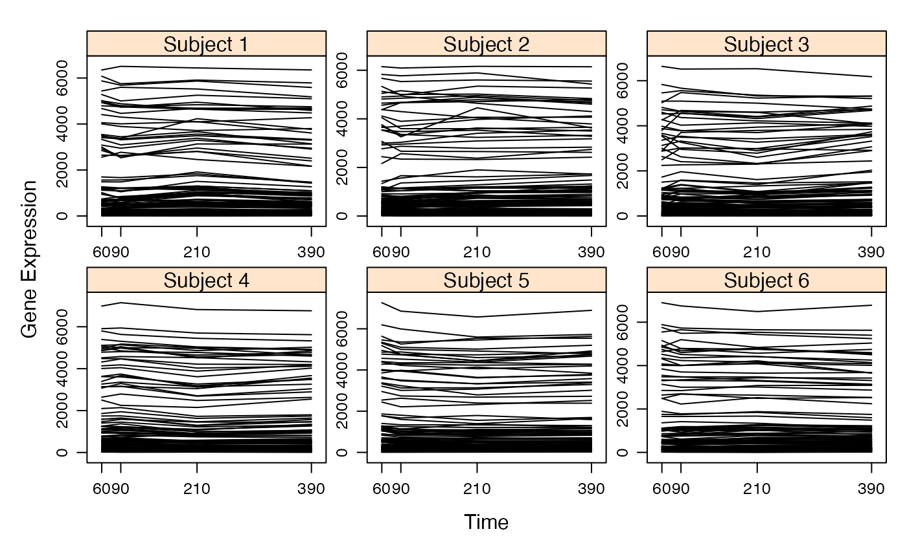

Coerce a matrix into a omics_array object.
Usage
as.omics_array(
M,
time,
subject,
name_probe = NULL,
gene_ID = NULL,
group = 0,
start_time = 0
)Arguments
- M
A matrix. Contains the omicsarray measurements. Should be of size N * K, with N the number of genes and K=T*P with T the number of time points, and P the number of subjects. This matrix should be created using cbind(M1,M2,...) with M1 a N*T matrix with the measurements for patient 1, M2 a N*T matrix with the measurements for patient 2.
- time
A vector. The time points measurements
- subject
The number of subjects.
- name_probe
Vector with the row names of the omics array.
- gene_ID
Vector with the actors' IDs of the row names of the omics array.
- group
Vector with the actors' groups of the row names of the omics array.
- start_time
Vector with the actors' starting time (i.e. the time it is thought to begin to have an effect on another actor in the network).
Examples
if(require(CascadeData)){
data(micro_US, package="CascadeData")
micro_US<-as.omics_array(micro_US[1:100,],time=c(60,90,210,390),subject=6)
plot(micro_US)
}
#> Loading required package: CascadeData
